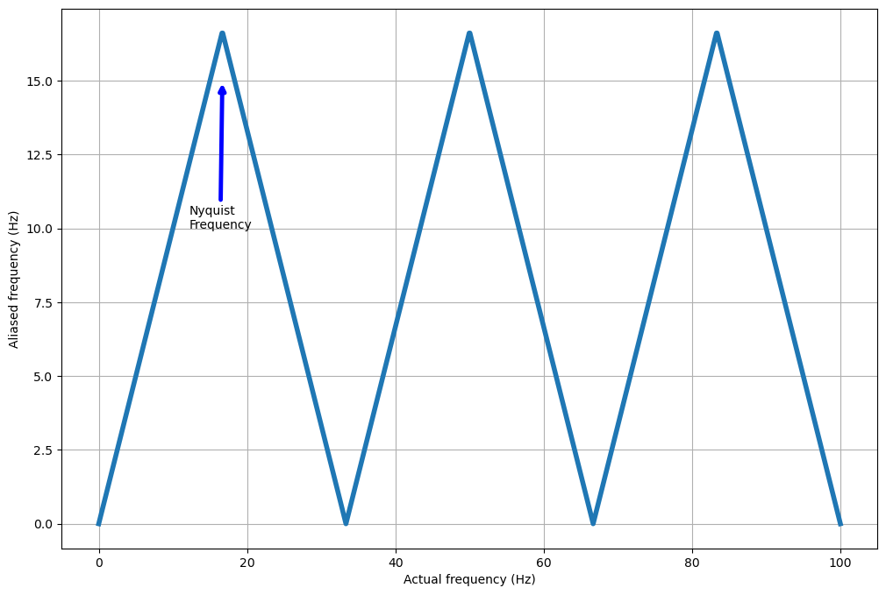

The Nyquist frequency
The Nyquist frequency is the maximimum frequency which can be seen within a signal for a
given sampling interval and is defined by:
$inF_{n} = F_{s}/2$in
Where $inF_{n}$in is the Nyquist frequency and $inF_{s}$in is the sampling frequency.
This means that the physical phenomenon which you are recording may be varying at a much higher rate than
you realise and what you see in the data is an aliased version of that signal. So what happens to high
frequency recorded at a low sampling rate? What frequency will it appear and what is aliasing?
Aliasing
Aliasing is the name given to the phenomenon of higher frequency signals appearing as lower frequencies. If a signal is varying at a rate above the Nyquist frequency of a recording system then the recorded signal will be aliased to a lower frequency under the Nyquist frequency. There is a specific relation between the the frequency of the signal, the aliased frequency of the recorded signal, and the Nyquist frequency.
$inf_{r} = |2f_{n} \lfloor \frac{f_{s}+f_{n}}{2f_{n}}\rfloor - f_{s}|$in
Here $inf_{r}$in is the frequency of the recorded signal, $inf_{n}$in is the Nyquist frequency, $inf_{s}$in is the actual frequency of the signal, and $in\lfloor\rfloor$in is the floor division operator. A signal at the Nyquist frequency may appear to be varying at the Nyquist frequency or not varying at all (a constant value) which is a zero-frequency signal. The below plot shows this result as a triangular pattern between actual frequency and recorded frequency.
Note that at multiples of twice the Nyquist frequency the aliased frequency appears to be zero, so there are no variations. Note that, as seen in the last topic, you can also be unlucky enough to have a signal aliased to be appear constant at odd integer multiples of the Nyquist frequency as well. The most common and dramatic examples of this aliasing phenomenon is when a rotating object is recorded by a camera or phone. These recording device usually record at 24 or 30 frames per second, which gives a Nyquist frequency of 12Hz and 15Hz respectively. When the object rotates at the same rate, or a multiple of, this Nyquist frequency then as the object rotates it does one full revolution before another frame is recorded and the rotating object appears to be at the same location in every frame. A great example of this is a helicopter or aeroplane propeller as can be seen in teh following video
In practice it turns out that it is rather difficult to accurately assess frequencies close to the Nyquist frequency so a "rule of thumb" is applied by many practitioners as to what frequencies can be recorded accurately. Although these rules of thumb vary, many would assume that frequencies measured between 90% and 100% of the Nyquist frequency too inaccurate for further analysis. This is compounded by the fact that many signals are typically bounded by windowing functions that impose their own spectrum on the recorded signal (this will be covered in the section on convolution).
Sometimes the data/meta-data that is missing from the set we have can be more important than the data that is there, especially if there is an important underlying reason why that data is missing. A classic example is given in the book "How Not To Be Wrong" by Jordan Ellenberg which I highly recommend reading (the relevant excerpt can be seen here: link, as well as on many people's LinkedIn posts!) as it highlights an important lesson; that the absence of data can be as informative as the data at hand. Much like understanding the space between objects in art is important, so is the space between recorded data points in science.
We've had a look at how some frequencies can be recorded faithfully and some will be aliased back to the range of recordable frequencies, but how can we tell what frequencies are present in a signal and to what degree? Can we decompose our signal into individual frequencies? All these questions will be answered in the next section on Fourier Series and Fourier Transforms
Introduction to Fourier Transforms